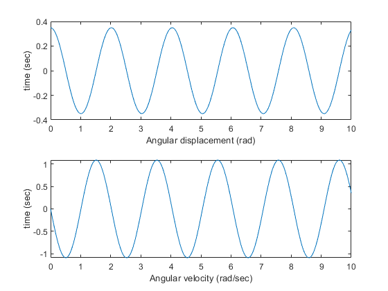
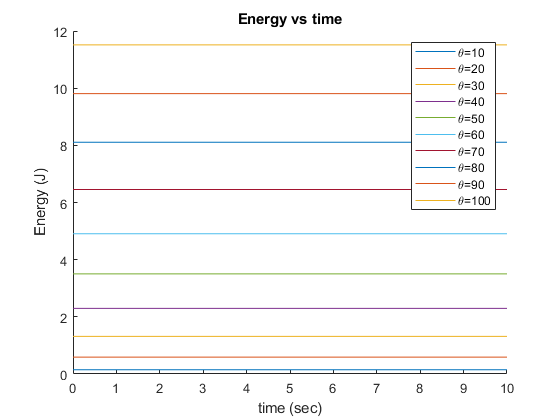
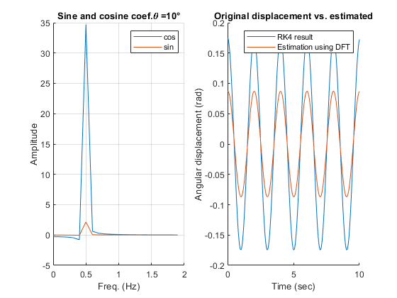
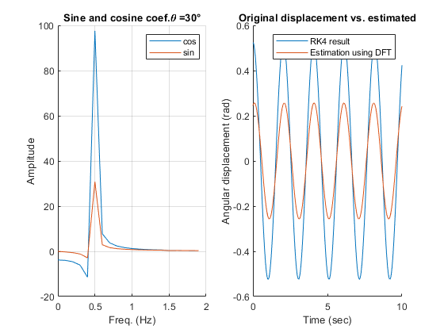
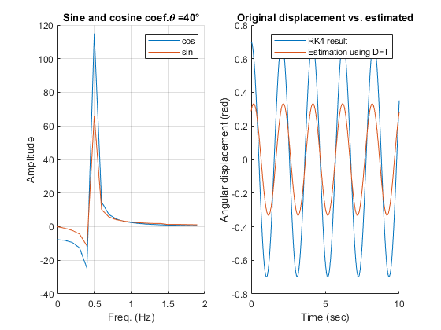
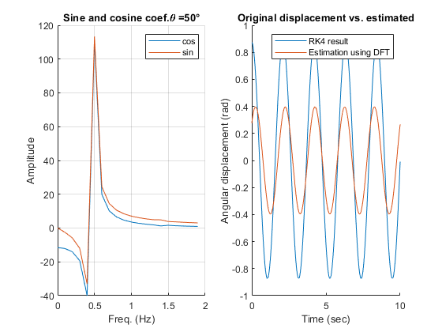
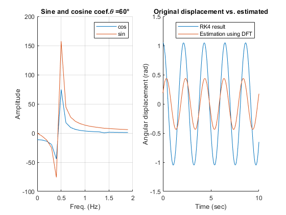
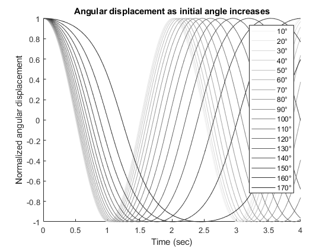

Contents
Problem 3(a)
Solve for the angular displacement and angular velocity using RK4.
clear;clc; theta = 20;%suppose initial angular displacement is 20 degree tvec = (0:0.01:10); [thetat,omegat] = nonlinearpendulum(theta,tvec);%use help ... for detail subplot(2,1,1); plot(tvec,thetat); xlabel('Angular displacement (rad)');ylabel('time (sec)'); subplot(2,1,2); plot(tvec,omegat); xlabel('Angular velocity (rad/sec)');ylabel('time (sec)');
Problem 3(b)
Show conservation of energy
clear;clc; g=9.81; %gravity a L=1; %assume length of pendulum is 1m m=1;%suppose m=1kg tvec = (0:0.01:10); figure();hold on; for i=1:10 theta = 10*i; [thetat,omegat] = nonlinearpendulum(theta,tvec); E(i,:)=m.*((L.*omegat).^2)/2+m.*g.*L.*(1-cos(thetat)); plot(tvec,E(i,:)) end hold off title('Energy vs time');xlabel('time (sec)');ylabel('Energy (J)'); legend('\theta=10','\theta=20','\theta=30','\theta=40','\theta=50',... '\theta=60','\theta=70','\theta=80','\theta=90','\theta=100');
From the plot, it is clear to see that energy is conserved.
Problem 3(c)
Estimate the period using DFT, and compare.
clear;clc; g=9.81; %gravity a L=1; %assume length of pendulum is 1m m=1;%suppose m=1kg tvec = (0:0.01:10); for i=1:6 figure(); theta = 10*i; [thetat(i,:),~] = nonlinearpendulum(theta,tvec); [an, bn, fn] = DFT_(thetat(i,:), tvec); %using help ... for detail. str=strcat('\theta = ',num2str(theta),char(176)); subplot(1,2,1);hold on; plot(fn(1:20),an(1:20)); plot(fn(1:20),bn(1:20)); xlabel('Freq. (Hz)');ylabel('Amplitude');legend('cos','sin'); title(['Sine and cosine coef.',str]); grid on;hold off; [ma,Ia]=max(an); [mb,Ib]=max(bn); subplot(1,2,2);hold on; plot(tvec,thetat(i,:)); plot(tvec,(sqrt(2.*pi)./length(an)).*(ma.*cos(2.*pi.*fn(Ia).*tvec)+mb.*sin(2.*pi.*fn(Ib).*tvec))); xlabel('Time (sec)');ylabel('Angular displacement (rad)'); title('Original displacement vs. estimated') legend('RK4 result','Estimation using DFT'); hold off; end    
I use the frequency where maximum value of an and bn is obtained as estimated freqency, which happened to be sqrt(L/g). However, since the pendulum is nonlinear, this does not fit very well with actual freqency for some initial angle. Also, because not all coefficients are used, the reconstructed curves have smaller amplitude.
Problem 3(d)
Prove as energy increases, period also increases.
clear;clc; g=9.81; %gravity a L=1; %assume length of pendulum is 1m m=1;%suppose m=1kg tvec = (0:0.01:4); str=[]; figure(); for i=1:17 hold on theta = 10*i; [thetat,~] = nonlinearpendulum(theta,tvec); thetat=thetat/max(thetat); plot(tvec,thetat,'Color',([1,1,1]-i*[5,5,5]/100)); tempstr=strcat(num2str(i*10),char(176)); str=[str,{tempstr}]; end xlabel('Time (sec)');ylabel('Normalized angular displacement'); title('Angular displacement as initial angle increases') legend(str); hold off
From the plot, the time taken for pendulum to do a complete cycle increase as the initial angle increases (energy also increase).